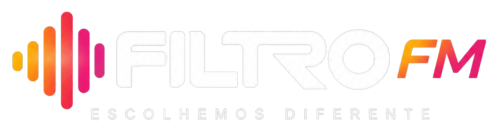

Somos uma rádio focada na música que está a acontecer agora — novos artistas, novos projetos, novos sons e novas formas de fazer música. A nossa programação é construída através de uma seleção musical própria, com espaço para propostas emergentes, artistas recentes e sons que começam agora a ganhar identidade. Através do nosso filtro descobrimos o que vem a seguir.
▶ OUVIR AGORAProcuramos artistas e músicas que estão a começar a marcar o seu espaço.
Abrimos espaço a sons, estilos e propostas que fogem ao circuito mais previsível.
Estamos atentos ao que está a acontecer agora — e ao que pode definir o que vem depois.
Em breve.